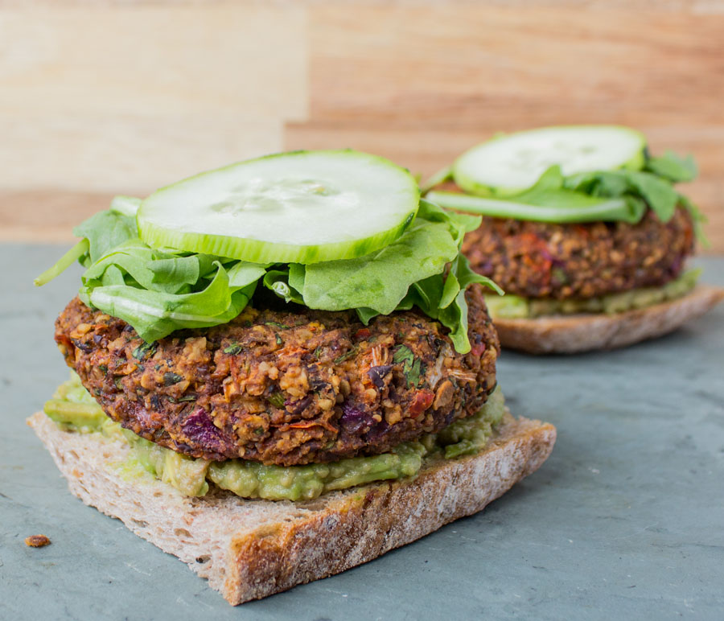

Black Bean Hemp Burger

Description
Hearty, flavorful, and packed with plant-based protein, these Black Bean Hemp Burgers are a delicious and nutritious option for any meal. Made with black beans, hemp seeds, red onion, garlic, and savory spices, they’re simple to prepare and full of satisfying texture. Whether pan-fried or baked, these burgers hold together beautifully and deliver a rich, smoky flavor that makes them a hit with vegans and non-vegans alike.
These burgers are not only gluten-free and soy-free but also loaded with essential nutrients like omega-3 fatty acids, iron, and fiber. The addition of hemp seeds adds a nutty flavor and protein boost, while ingredients like smoked paprika and tamari elevate the taste. Enjoy them on a toasted bun with your favorite toppings, or pair with a fresh salad or grain bowl for a wholesome, balanced meal. Perfect for weekly meal prep or casual dinners, this recipe is a must-try for anyone craving a clean, tasty veggie burger.
Ingredients
- 1 red pepper, roughly chopped
- 1/2 red onion, roughly chopped
- 1/2 cup brazil nuts
- 1/4 cup pumpkin seeds
- 1/4 cup hemp seeds
- 2 cloves garlic
- 2 tsp chili powder
- 2 tsp cumin
- 1 ½ tsp sea salt
- 1 14- oz can black beans
- 1 cup cilantro, chopped
- 1/2 cup quick cooking oats or oat bran
- 6 slices of toasted ciabatta bread, or your vessel of choice
- 2 cups arugula, mixed greens, or butter lettuce
- 1 avocado, sliced
- 1/2 cucumber sliced
Steps
- Preheat oven to 350° and line a baking dish with parchment paper. Also grab a large mixing bowl, and your food processor.
- Add the red pepper and onion to the food processor, and pulse until minced. Pour into the large mixing bowl.
- Add the brazil nuts, seeds, garlic cloves, chili powder, cumin, and sea salt to the food processor, and blend until it has combined into a grainy mixture. Pour into the mixing bowl with the onion and pepper.
- Add the beans and cilantro to the processor, and blend until almost smooth (a few chunks of bean is okay). Pour into the mixing bowl.
- Pour your oats into the mixing bowl with the other ingredients, and stir well to combine. The oats will expand and help hold the burgers together.
- Form into tight palm-sized patties, and place each onto the baking sheet.
- Bake for 25 minutes.
- Remove from the oven and use a spatula to flip each burger. Continue baking for another 10 minutes.
- Serve with ciabatta, avocado, cucumber, and arugula.
Home